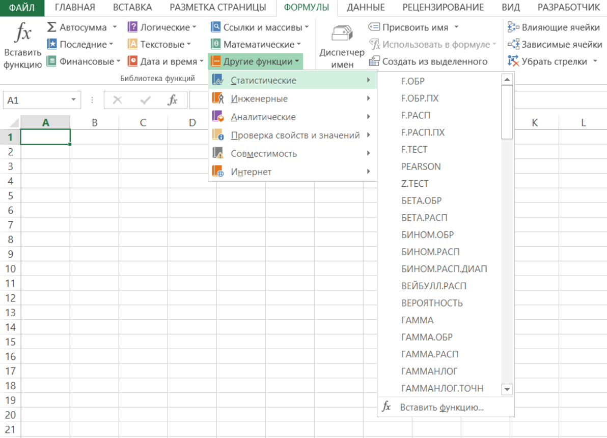
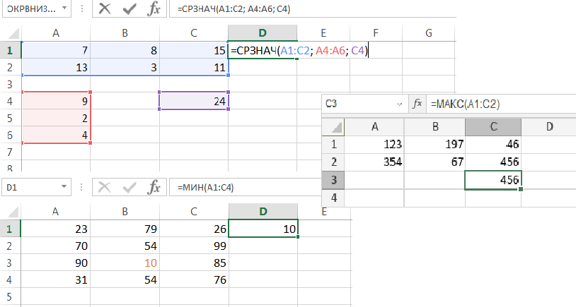

Функция – стандартная формула, которая обеспечивает выполнение определенных действий над значениями, выступающими в качестве аргументов. Функции позволяют упростить формулы, особенно если они длинные или сложные. Функции используют не только для непосредственных вычислений, но также и для преобразования чисел, например для округления, для поиска значений, сравнения и т. д.
Функции в Excel используются для выполнения стандартных вычислений в рабочих книгах.
Значения, которые используются для вычисления функций, называются аргументами.
Значения, возвращаемые функциями в качестве ответа, называются результатами.
Помимо встроенных функций вы можете использовать в вычислениях пользовательские функции, которые создаются при помощи средств Excel.
Чтобы использовать функцию, нужно ввести ее как часть формулы в ячейку рабочего листа.
Последовательность, в которой должны располагаться используемые в формуле символы, называется синтаксисом функции.
Все функции используют одинаковые основные правила синтаксиса.
Если вы нарушите правила синтаксиса, Excel выдаст сообщение о том, что в формуле имеется ошибка.
Если функция появляется в самом начале формулы, ей должен предшествовать знак равенства, как и во всякой другой формуле.
Аргументы функции записываются в круглых скобках сразу за названием функции и отделяются друг от друга символом точка с запятой “;”. Скобки позволяют Excel определить, где начинается и где заканчивается список аргументов. Внутри скобок должны располагаться аргументы. Помните о том, что при записи функции должны присутствовать открывающая и закрывающая скобки, при этом не следует вставлять пробелы между названием функции и скобками.

В качестве аргументов можно использовать числа, текст, логические значения, массивы, значения ошибок или ссылки. Аргументы могут быть как константами, так и формулами. В свою очередь эти формулы могут содержать другие функции. Функции, являющиеся аргументом другой функции, называются вложенными. В формулах Excel можно использовать до семи уровней вложенности функций.

Задаваемые входные параметры должны иметь допустимые для данного аргумента значения. Некоторые функции могут иметь необязательные аргументы, которые могут отсутствовать при вычислении значения функции.